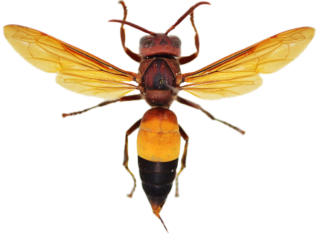
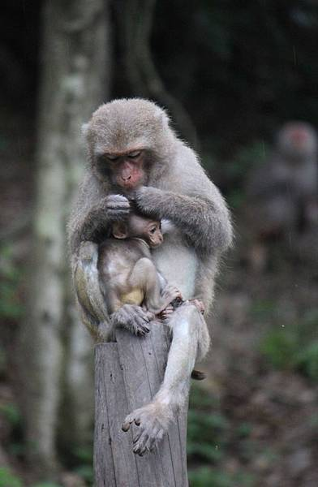
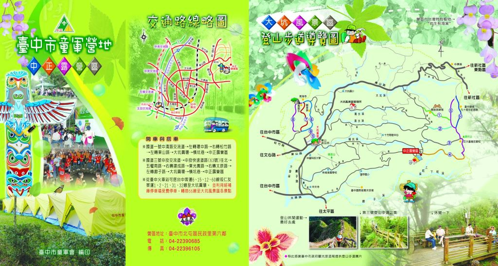

首頁
路線介紹
附近飲食
交通方式
注意事項
≡
入山遊客須知
遊客請注意山區野生生態
虎頭蜂
山區步道附近如見蜂窩，為避免引來虎頭蜂螫叮習性，請遵守以下原則：
不可主動攻擊
不可喧嘩騷動
勿噴香水
不要穿著鮮豔服裝
請
保持與蜂群的距離

台灣獼猴
在步道4號步道皆有機率遇到野生獼猴群，請注意以下事項：
經過獼猴猴群時請保持冷靜
，不要突然大聲喧嘩或過大動作，以免引起獼猴誤會您要威嚇牠們，並請安靜快速離開
不要與獼猴四目相對
；不要試圖接觸或恐嚇獼猴
如果遇見獼猴對你發出威嚇的聲音或行為，請不要再前進，往回走或走其他路線，並且快速檢查自己的隨身物品〈例如：是否有塑膠袋、背包拉鍊是否打開、食物及飲料是否外露…等等〉
觀察或對獼猴拍照時，請保持至少5公尺以上距離
，身上物品如背包、水壺不要離身放在地上
如果物品被獼猴拿走不要試圖搶回
，在遠處觀察牠的去向，等獼猴對該物品沒興趣就會丟棄，
待獼猴離開再過去撿回
如果有獼猴無故只一直跟著您，請快步離開現場，並請檢查隨身物品，切勿與獼猴對峙，請旁邊的友人或民眾幫忙看看獼猴是否還持續跟隨
如被獼猴咬傷或抓傷，馬上離開猴隻〈猴群〉，盡快用清水持續沖洗傷口15分鐘以上並聯絡本處，請人陪同盡快送醫。就醫時請一定要告訴醫生您是被獼猴咬〈抓〉傷

攀爬前叮嚀
大坑4號步道由於落差極大，有一段300公尺的垂直陡坡
建議老年與高血壓者盡量不攀登大坑1至5號及5-1號步道
一般而言，大坑6、7、8、9、9-1號步道較適合男女老少攀登，而1至5號及5-1號步道對登山客較有挑戰性，大坑1至5號及5-1號及10號步道因具有陡坡，心臟疾病或體力差者，請勿任意嘗試
進入園區宜穿著舒適的衣褲、運動鞋或登山鞋，並做好個人的防曬措施
園區內因取水不易，登山步道沿線並未提供盥洗設施，我們在各主要登山口都設有公廁可供使用，請在入山前先行解放再輕鬆上山
租借中正露營區

中正露營區位於台中市大坑頭嵙山西方，海拔四六五公尺，是大坑規模最大的公營露營地。
各個營地皆有石階步道相連，但各自有獨立、不受干擾的隱蔽性，共可容納1500餘人在此紮營活動，區內公共設備齊全，並提供營帳、炊具等出租服務。營區內的相思樹林，是能讓人充份享受大自然野趣的所在。
基本資料
聯絡電話
04-22390685
官方網站
https://pse.is/us3sk
營業時間
08:00~22:00
場地大小
可容納約1500人
收費方式
場地維護費二天一夜每人50元，每增一天加收30元
(本站資料只供參考，實際收費標準以營地當時公佈為主)
營地與附屬設施
廁所
V
盥洗室
V
戶外洗滌區
V
烤肉區
V
停車場
V
大型場地
V
營火場地
V
露營中心
V
設備出租
V
動物園
V
緊急事故處理相關聯絡資訊
東山派出所：
東山路2段30號，☎TEL：04-22392713、04-22394925
臺中市救難協會：
東山路2段151-2號，☎TEL：04-23959595
中正露營區：
北坑巷130號，☎TEL：04-22390685